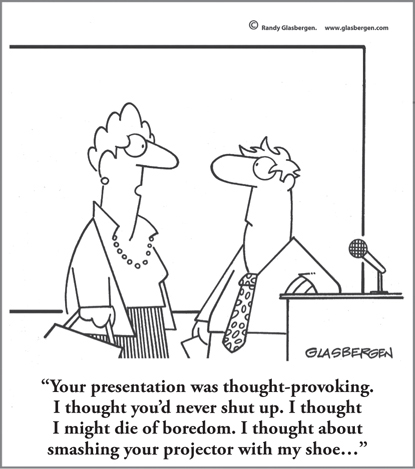

CHAPTER 13
Influencing, Getting Buy-In, and Connecting with Your Customers: Thinking Behind the Pitch

CHAPTER HIGHLIGHTS
 Understanding how someone thinks provides clues about how that person will engage, influence, and drive his or her decision-making process.
Understanding how someone thinks provides clues about how that person will engage, influence, and drive his or her decision-making process.
 Whether your customers are external or internal, everyone in business today is involved in selling.
Whether your customers are external or internal, everyone in business today is involved in selling.
 Marketing, advertising, selling approaches, and products can all be analyzed in terms of thinking preferences.
Marketing, advertising, selling approaches, and products can all be analyzed in terms of thinking preferences.
 People respond more positively when ideas, solutions, or products are presented in a way that aligns with their thinking preferences.
People respond more positively when ideas, solutions, or products are presented in a way that aligns with their thinking preferences.
Susan had been calling on Dr. Wilburn for seven years now. Although he had always been polite, he wasn’t what you would call warm. Their conversations were strictly business and consistently brief. She knew that many physicians had grown weary of all the calls and visits by pharmaceutical sales reps, but she also knew that her specific drug line would be extremely beneficial for a specific segment of his patient population—if only he would give her the attention and time to understand why. She’d shown him the clinical trial reports, the specifications, and the statistics, but she couldn’t seem to break through.
One day, as she began to pull up some recent data for him to look at on her new tablet computer, Dr. Wilburn commented on the photo on her screen—a picture of her family on a sailboat.
“Oh, you like boating? You have to see this, then.”
He pulled out a state-of-the-art gadget and scrolled through recent vacation photos of himself and his family out on their boat.
“Can you believe how crisp the detail is?” he marveled. “It’s as close as you can get to being there!”
He confided that new, innovative technology was his secret obsession. He was always upgrading to the latest and greatest “toys,” and he loved experimenting with the new features to see what possibilities there might be for using technology in his practice or for helping him stay connected to his family who lived far away.
The conversation had finally moved beyond the businesslike formality of the past seven years, but for Susan, there was something even more significant about this exchange. She realized something about Dr. Wilburn’s thinking, and also saw why she’d never been able to break through in all that time.
“I’d always assumed that because he’s a doctor, his thinking would be very clinical, analytical, and by the book,” she recalled to her manager. “But it turns out, he’s much more conceptual and people-oriented in his thinking. I was talking about cold, hard facts when I should have been talking about possibilities and patient benefits. No wonder he’d been tuning me out.”
Tiffany McMacken1 of Purdue Pharma says that picking up on these kinds of clues makes all the difference in today’s pharmaceutical sales environment, where it’s not uncommon to get only two or three minutes to spend with a physician, or where there are numerous gatekeepers to get through just to see the decision maker. Understanding how people think helps you not only understand how to “speak their language,” but also determine what will engage their attention, drive their decision-making processes, and influence them—especially when you only have two or three minutes with them!
At this point, you might be thinking, that’s all very interesting, but I don’t work in sales. I would challenge you to take a closer look at what you do and see if that’s really true. As Dan Pink suggests in his book To Sell Is Human,2 and as numerous others have pointed out as well, no matter what your specific role is, all of our jobs involve selling in one way or another, whether you’re making a pitch, influencing a decision, getting buy-in, selling your ideas, or selling yourself. Building your influence, which is so crucial in today’s environment, often means being able to “sell” up, down, across, and outside the organization. There’s a great deal we can learn about connecting and influencing from the best in the sales profession that we can then apply in our own way to be more successful in our own specific responsibilities.
Not only has influence become more critical in business, when you consider all the people who may have to weigh in on a decision or be convinced of your idea or its value, but your “customer” base has gotten larger, more diverse, and more distracted. Forget the Golden Rule. To get to the “yes” quickly, you have to apply what Dr. Tony Alessandra calls the Platinum Rule3: treating others the way they want to be treated. Thinking preferences provide the clues to get you there faster and on point.
Overcoming Resistance and Skepticism
Do you remember the last time you were being pitched by someone who really didn’t “get you”? Our tolerance for such a mismatch as receivers is very low, yet it happens more often than not when we ourselves are trying to influence others. It might happen when you’re trying to influence your boss or spouse to take action, or when you’re working with a colleague who just doesn’t see things your way. Maybe you’re attempting to teach your child a new skill or are in the middle of a presentation to a tough audience. Progress is slowed or even stopped completely simply because your audience is hearing or viewing the messages through a thinking lens that’s very different from the one you’re presenting through.
HBDI master facilitator Chuck McVinney4 delivers a program called “Faculty Leadership for Scientists and Engineers” with Charles Leiserson, a professor of computer science and artificial intelligence at MIT. They’ve conducted this program, which incorporates Whole Brain Thinking into leadership development, with faculty members at numerous major universities, including the MIT School of Engineering, Carnegie Mellon University School of Engineering and Computer Science, UC Berkeley School of Science and Engineering, Harvard University Division of Computer Sciences, and the National University of Singapore.
As with many presentations delivered before a group, the kickoff is very important because it’s all about getting buy-in. If you don’t have that to begin with, you’ve lost your audience for the rest of the program. So that first introduction of the Whole Brain Model in this program is, at its core, like a sales pitch; whether or not the faculty members “buy it” depends on how aligned their thinking is with the mentality behind how it’s presented.
Figure 13-1 shows a highly visual representation of the model as a metaphor for how the brain works. For many people, this message resonates instantly. The colorful, image-filled depiction of the different thinking styles makes the concepts clear to them. They get it, they accept it, and they’re ready to move on.
FIGURE 13-1 The Whole Brain Model: A metaphor.
For the strong A-quadrant thinkers who make up the science and engineering faculty in Chuck’s leadership sessions, however, it’s a different story. He found that they would see this image and start analyzing and interpreting it in a completely different way. Even though the model is a metaphor, they were viewing it from their own literal, analytical perspective, and the walls went up. They simply weren’t going to accept this conceptual framework on its face.
Chuck and Charles realized that they needed to essentially “sell” the model in the way this audience would best understand it and buy into it. That’s when they came up with a new visual to introduce it (see Figure 13-2). Note the description: the A-quadrant nature of it matches the thinking preferences of their audience. Since they changed the presentation, the difference in response and buy-in has been dramatic. The faculty members accept it and move on.
FIGURE 13-2 The Whole Brain Model: A first-order engineering approximation to mental diversity.
Connecting with Your Customer
Developing products with customers in mind takes the idea of Whole Brain design to a new level. A lot of organizations talk about being customer-focused and customer-centric, but Microsoft,5 with the launch of its Kinect peripheral for Xbox 360, did a fantastic job of really looking at who its customer was, and in the process was able to actually improve its design and development approach.
To showcase Kinect’s features, the development team at Microsoft Game Studios’ Good Science Studio was given the task of making sure that the series of games that shipped with the new peripheral would appeal to the whole family, not just the typical “gamer.” Recognizing from our data that the world is a composite Whole Brain, the team members used the Whole Brain Model as a foundational design principle and designed games that appealed to all of the different thinking preferences. Thinking preferences were factored into the game features, the user testing phases, and even as they looked at the makeup of their own team. According to the design team, the benchmark testing they conducted after the game’s release confirmed that the Whole Brain design approach had paid off: the most whole-brained game proved to be the most popular.
Another company that puts thinking at the heart of its customer approach is Telecom New Zealand.6 How often have you called a customer service number and been totally frustrated by the response and attention you received? Maybe you had to call back again and again to get a satisfactory resolution to your problem. This isn’t just annoying for you; it’s wasting time and money for the company—and probably damaging its reputation. Telecom New Zealand wanted to get out in front of this issue. To reduce repeat calls to its call centers and increase customer satisfaction rates, the company implemented Whole Brain Thinking training for its call center representatives to help them pick up clues about their customers’ thinking preferences so that they could tailor their responses in the most effective way for that person. This meant moving away from a canned script to a more adaptive style, but as the company has discovered, it has ultimately made the call center representatives more efficient. Whereas some customers may have felt rushed and others shortchanged in the past, now all customers spend the “right” amount of time with a representative.
The results have been quantifiable in a number of different ways: the company has experienced a dramatic improvement in postcall surveys, including team customer satisfaction ratings of 4 out of 4, increased dials-to-calls-completed, and improved sales results. In fact, it saw satisfaction scores increase within weeks of undertaking the program, and according to the company’s independent auditors, for every $1 it invested in the Whole Brain Thinking program during the first year of the initiative, it made $12 in return. That’s what I would call a significant Return on Intelligence (ROI®)!
Depending on your role, your customer might be a broad consumer audience, like Microsoft’s, or an individual on the other end of the phone, like Telecom New Zealand’s. It could be a client that you’ve been trying to make headway with or a colleague in another department. Maybe you need to get buy-in from your boss or rally the team behind your vision. No matter whom you are trying to influence, when you’re able to “meet them where they think,” you’ll be more efficient, and you’ll have a better chance of getting the response you’re looking for.
When preparing for any important discussion or presentation, follow these Whole Brain steps to cover each quadrant for best results:
1. First, give context to clarify very early on why you are there: What it is that you want to get across and why? What’s the big picture? Why does this matter? Without context, your messages can be misunderstood or even ignored. (D)
2. Have an agenda or outline in mind, even if it’s brief, to let the person or people know where you’re going and what to expect—and then stick to it. In addition to helping you stay on point and demonstrate a clear purpose, this step will ensure that you hit on everything you set out to address. (B)
3. Present the key data and facts that back up your intention. Now that you’ve set up the context and the agenda, you can dive into the content. Your “customer” will have the clarity and perspective to view it through the appropriate lens and hear it the way you meant it. Be prepared with the necessary knowledge to ensure credibility. (A)
4. Engage with interactions and relevant stories, make great eye contact, and listen. Our brains are always looking for connections. By facilitating this process and helping your customer make the connections throughout, you’ll have better impact, and the messages will “stick.” (C)
SO WHAT?
 No matter what your role is, an essential part of your job is to sell, influence, or gain buy-in in some form or fashion.
No matter what your role is, an essential part of your job is to sell, influence, or gain buy-in in some form or fashion.
 By understanding how those you seek to influence think, whether they are your customers, colleagues, boss, or family members, you can get to the root of how they make decisions and, as a result, influence them in a faster, more positive way.
By understanding how those you seek to influence think, whether they are your customers, colleagues, boss, or family members, you can get to the root of how they make decisions and, as a result, influence them in a faster, more positive way.
 The Whole Brain approach, through its diagnostic power and design direction, offers a practical framework for improving presentation, product, and service design as well as other customer-facing activities.
The Whole Brain approach, through its diagnostic power and design direction, offers a practical framework for improving presentation, product, and service design as well as other customer-facing activities.
 When in doubt, use a Whole Brain approach to ensure that all audience members have their needs met.
When in doubt, use a Whole Brain approach to ensure that all audience members have their needs met.